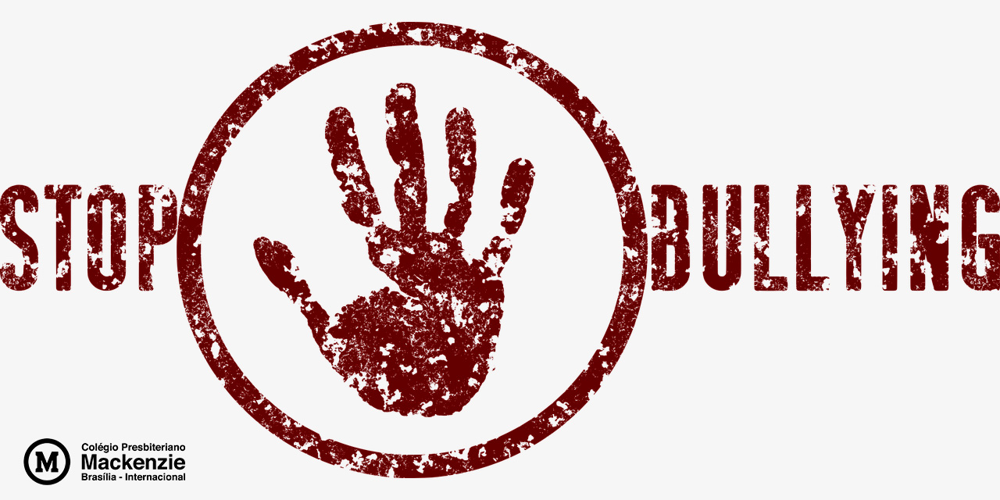

A pratica do bullying consiste em um conjunto de violencias que se repetem por algum periudo.gerraumente cão agressoes verbais,fisica e pisicologica que umilha as vitimas.
" é uma palavra que se originou na língua inglesa. “Bully” significa “valentão”, e o sufixo “ing” representa uma ação contínua. A palavra bullying designa um quadro de agressões contínuas, repetitivas, com características de perseguição do agressor contra a vítima, não podendo caracterizar uma agressão isolada, resultante de uma briga."
"O bullying pode acontecer no condomínio, na vizinhança, em grupos ou agremiações esportivas"
" podem ser devastadoras e irreversíveis para a vítima. Os primeiros sintomas são o isolamento social da vítima, que não se vê como alguém que pertence àquele grupo.
"A violência não é combatida com mais violência. Às vezes, punições aos agressores são necessárias quando estes extrapolam qualquer limite razoável, porém, na maioria das vezes, os agressores também são jovens que sofrem por algum motivo. Nesses casos, a melhor maneira de solucionar o problema é pelo diálogo e conscientização. "
